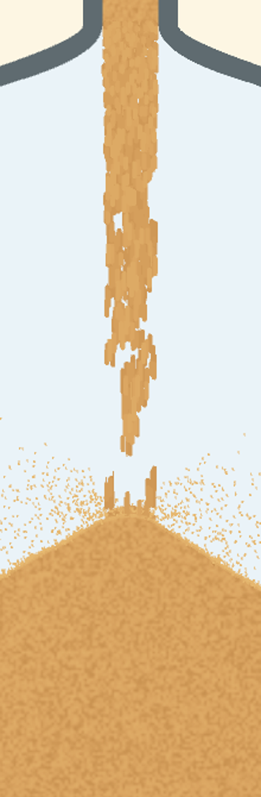
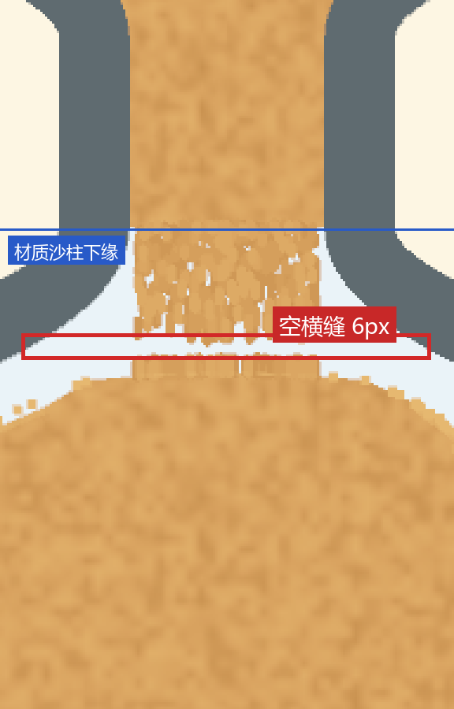
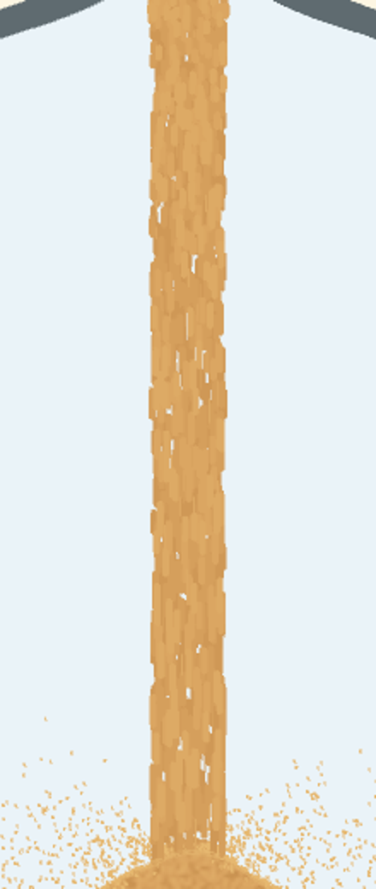

历史原稿，不是当前规则。 本页保留旧测量、旧门槛和原始矛盾结论；其中有后来被推翻或未完成跨档验证的内容。
当前看 按部位分组的图文用例；每版结果看
版本记录。本轮没有重跑这些实验，旧“已修复 / 通过”不自动适用于当前版本。
验收标准 —— 视觉类改动（含出口以下的下落沙柱）
位置 design/checks/notes/old-acceptance.html · 2026-10-12 首版 · 配套
hourglass.html、QA 纪律（证据等级）、历史判据 A1–A7
起因。 2.78 出货后用户质问「2.78 的 QA 是谁」「这种也能通过？」「我不是让你每次测试都去安卓版本跑吗？」。
复盘：所有闸门都是作者自证的 —— 金标准每改必重标定（只回答"像不像上一版"）、
旋钮关掉一致（只证明"可控"）、剖面单调（只证明"它做了我让它做的事"）；
唯一能判观感的那道闸门（并排图交用户）是我自己看的，而且我预先写了「觉得太多/太少都不用发版」。
装机实测被我降级成"push + 一张缩放模拟器图"，而
这份文件写给"改之前"：不满足就不许说改好了、不许 push。
pc/apk/CLAUDE.md:51 写的是「桌面三态 + 装机实测」。这份文件写给"改之前"：不满足就不许说改好了、不许 push。
0. 元规则
- R0「通过」两个字归用户。 我最多能说两种话： ① 「机械判据 X/Y 通过（附原始输出）」；② 「并排图与设备 1:1 截图在此，待你裁决」。 在用户表态之前写「更自然 / 更好 / 没问题 / 可以发版」都是越权。
- R1 证据等级（
QA_RULES.md铁律 0）：E1 有对照的实测 · E2 有实测无对照 · E3 只有断言 / 只看了代码 · E4 事后被推翻。没到 E1 不许写"验证通过"；E2/E3 要如实标。 - R2 作者自证类闸门，各自只能证明一件事（都不能证明"好"）：
| 闸门 | 能证明 | 不能证明 |
|---|---|---|
金标准 _render_golden --check | 与上一版逐图一致 / 变化范围 | 对不对 —— 它每改必重标定，等于盖章放行 |
| 关旋钮逐像素回参照 | 改动可控、可回退 | 开的时候对不对 |
| 剖面单调 / 达标 | 它做了我让它做的事 | 那个事该不该做（2.78 剖面 1.1→55.6% 完全达标，结果是错的） |
test_physics_equiv / pyflakes | 没破坏既有契约 | 视觉正确 |
| 同帧 md5 稳定 | 不闪 | 图案对不对 |
- R3 判据集不许由实现者自选。 至少要有一条与本次改动目标正交的量。 2.78 只量了它自己造的那个剖面 ⇒ 三条正交量（连续性 S1、图案速度 S2、墨量 S3）一条都没进判据集。
- R4 门槛必须先标定：先拿「已知好」与「已知坏」各跑一遍，门槛要能把两者分开。
本对象的标定对：已知好 = 1.244（用户裁决过的参照）· 已知坏 = 2.78（用户判词：断成虚线）。
分不开的门槛等于没有门槛（旧 A1 的
[0.6,1.5]已知错也落在里面，属反例）。 - R5 观感归用户：改像素之前先把改前/改后并排图交上去（项目红线
CLAUDE.md§八）； 统计量只能事后解释"为什么"，不许用来裁决"好不好"。 - R6 量具的五个已知陷阱（都栽过）： ① 缩放图判细结构 —— 缩图把 1~4px 的缝与亮沙混在一起（我把缝读成亮沙，用户纠正）； ② 行平均覆盖率看不见竖缝、中位数对混合比变化不敏感（要用均值）； ③ 录像不能当量具（编码器对 1~3px 细颗粒有码率呼吸，同一静止区域能摆 2.9 倍）； ④ 窗口污染（下球沙堆是另一个层且静止，窗口压到堆上会得出"材质不动"的假结论）； ⑤ 对照图不同倍率（左 ×10 右 ×3，被读成"放大 2.5 倍"）。
1. 结构性判据（S —— 对象正确性，与"好不好看"无关）



| # | 判据 | 怎么量 | 门槛 | 已知好 | 已知坏 |
|---|---|---|---|---|---|
| S1 | 柱身不许整宽横断；缝必须短、稀疏 | 柱带内逐行"整行背景（≥90% 窗宽）"的连续 run 长度（_probe_gap_structure.py 的 run_*） |
≤ 2 行（已标定：0 vs 16 行） | 1.244 = 0 行（实测，t=8.77/46.0）· 2.76 = 0 行（实测） | 2.78 = 16 行（实测，t=8.77 行 2130–2145） |
| S2 | 图案必须随沙走：图案速度 ÷ 粒子速度 ≈ 1 | 逐帧互相关（_probe_speed_ratio.py），只在柱子高度带内（避开沙堆窗口） |
落在标定带，跨档一致（极差 ≤1.15×）（已标定过） | 粒子的固有纹理 ≈ 1 | 2.78 的筛子 = 0（钉在空间） |
| S3 | 墨量不许被大比例静默拿掉 | 柱内每行沙色像素（中位）× 分带；沙色用 1-近邻分类（与配色无关） | 默认档各带 ≥ 参照臂 × X%（X 待标定；已知坏深处只剩 44%） | 1.244 = 56 px/行 | 2.78 深处 −55% |
| S4 | 出口以下前 N px 不许断续（物理：最上段平滑均匀） | 与 S1 同法，取 d < N 的行 |
N 与门槛待标定 | 1.244 | —— |
| S5 | 跨档与跨口径都要过 | 1s / 50s / ≥600s × 桌面 400×875 与平板 1904×2890；转屏各一次 | 全部档位都过 S1–S4 | —— | 2.77 的"发丝颈"只在 ≥36000s 档出现 |
| S6 | 落沙↔沙堆的衔接处不许出现全宽空横缝 | 柱带内「整行背景」连续 run；位置限定在沙堆顶面 ±40px | ≤ 2 行（已双侧标定） | 1.244 = 0 行（实测 t=46.0/48.4）· 材质带开 = 0 行（最小 S=78/91） | 2.76 / 2.78 = 3 行（≥90% 口径；66% 松口径 6 行）· 宽 170px |
| S7 | 不许破坏既有契约 | _pixdiff.py（屏蔽版本号）关旋钮对比 · test_physics_equiv.py · pyflakes 未定义名 |
差异 = 0 · PASS · 0 个 | —— | —— |
| S8 | 用户可见设置项必须有活性守卫 | 把该设置拧到两个极端，渲染必须不同（md5） | md5 必须不同 | —— | 2.72「沙流断续」、2.62 孔隙率 = md5 相同（死） |
两条门槛今天都已标定（用实测两侧）： S6 的"已知好"有两条独立读数（1.244 = 0 行；材质带开 = 0 行）、
"已知坏"是 2.76/2.78 = 3 行（≥90% 口径）⇒ 取 ≤2 行。S1 的"已知好"是 1.244/2.76 的 0 行，
"已知坏"是 2.78 的 16 行（t=8.77 行 2130–2145）⇒ 同一个 ≤2 行门槛，余量 8 倍。
⚠️ 两条都还只验过 50s + 平板口径 —— 跨档复核（S5）仍是欠账。
⚠️ 口径必须写死：同一条缝在 66% 口径下是 6 行、90% 口径下是 3 行 —— 报数时两个数一起给，别只挑一个。
1.5 评分制：不是"通过 / 不通过"二元（2026-10-12 增）
上面每条判据其实都是连续量，所以给分数（0–100）：0 分 = 已知坏、100 分 = 已知好，锚点全部出自实测。 均分只用于排序；最低分项必须同时列出（分数会掩盖致命单项）。是否允许"以长补短"由用户定。
| 判据 | 连续量 | 打分式（锚 = 实测） | 1.244 | 2.76 / 2.77 | 2.78 |
|---|---|---|---|---|---|
| S1 连续性 | 柱带内"整行背景(≥90%)"最长连续行数 | 100·(1 − run/16)；16 行 = 2.78 实测 | 100（0 行） | 100（0 行） | 0（16 行） |
| S2 图案随材料走 | 相隔 20.7s 两帧、同批像素上的背景重合 J(0) | 100·(1 − (J−0.015)/0.373)；0.388 = 2.78 实测 | 100（J=0.015） | 93（J=0.042） | 0（J=0.388） |
| S3 墨量 | 柱内每行沙色像素（中位） | 100·min(1, ink/55)；55 = 1.244 参照 | 100 | 100（64，封顶） | 87（48） |
| S4 出口段 | 出口下 0–25px 背景率 | 无已知坏锚 ⇒ 暂不分档，只报数 | 100（10.4%） | 100（9.4%） | 100（9.4%） |
| S6 衔接缝 | 衔接处"整行背景"最长连续行数 | 100·(1 − run/3)；3 行 = 2.76/2.78 实测 | 100（0 行） | 0（3 行） | 0（3 行） |
| S7 契约 | 物理等价 / pyflakes / 关旋钮逐像素 | 二值 | 100 | 100 | 100 |
| S8 设置活性 | 失效的用户可见设置项个数 n | 100·(1 − n/2) | N/A（它还没有这些菜单项） | 0（死 2 项） | 0（死 2 项） |
| 均分（N/A 不计入分母） | 100.0（6 项） | 70.4（7 项） | 41.0（7 项） | ||
⚠️ 这张表量的是"沙柱与衔接"这一块，不是整个 app。1.244 在这六项上满分， 但它在尺子之外有实测缺陷（长周期"发丝颈"：内孔 0.7~2.9px，2.77 才修）与工程欠账（2.x 的批处理/预热/165Hz 它没有）； 2.76 的 0 分项是 S6 / S8，2.78 的是 S1 / S2 / S6 / S8。分数低 ≠ 该扔，分数高 ≠ 没事。 S5（跨档跨口径）还没有分 —— 三版都只验过 50s + 平板口径。
2. 过程判据（P —— 交付与流程）
| # | 判据 | 说明 |
|---|---|---|
| P1 | 装机实测 = 设备上跑 + 原始分辨率截图 / 录屏 | 不许拿缩放图判细结构；截图里版本号要看得见；档位用用户会看的那个（本轮是 50s）；
pc/apk/CLAUDE.md:51 原话：「桌面三态 + 装机实测」 |
| P2 | 交付物齐备（见 §3），缺一不许交 | —— |
| P3 | 改前/改后并排图先交用户，再谈 push | 2.78 的顺序是反的：自己看、自己判、push、然后才给图 |
| P4 | 回退口必须被读到 | 每臂回读并打印实际值（标记文件有两个目录：<app>/ 与 <app>/tools/，本项目为此栽过；
环境变量在设备上不存在） |
| P5 | 单变量对照臂 | 改前/改后各一臂，除被测变量外逐字节相同（回读 code_hash 核对） |
| P6 | 题面里没量过的档位 / 状态要如实列进"未验证项" | 不许用"主力档通过"代表"全档通过" |
3. 交付物清单（交给用户的那一份）
- 并排图：改前 / 改后，同时刻、同口径、同倍率、1:1 不缩放，附标签与 md5；
- 设备 1:1 截图（P1），能看清柱子，版本号可见；
- 机械判据表：每行 = 判据 / 命令 / 原始输出 / 结论（原样贴，不许转述）；
- 回退口：一个真的被读到的旋钮 + 自证输出；
- 如实列：已知代价、未验证项、没覆盖的档位。
4. 一票否决（禁用做法）
- 用统计量代替眼睛；用「作者觉得更自然」代替用户裁决。
- 先 push 再给图（2.78 的顺序）。
- 拿「金标准全绿」当「没问题」—— 它每改必重标定。
- 拿脚手架通过（旋钮关掉一致 / 单测 / pyflakes）当「视觉正确」。
- 没标定过的门槛当依据；缩放图判 1~4px 结构；录像当量具。
- 把「机械判据通过」写成「验证通过 / 修好了 / 没问题」而不标证据等级。
5. 附表：拿这套判据去量今天的三棵树
| 判据 | 1.244（参照） | 2.76（已出货） | 2.78（已出货） | 分辨力 |
|---|---|---|---|---|
| S1 柱身整宽横断 | —— | 中段 0 行 | 大面积（断成虚线） | 门槛待标定 |
| S2 图案速度比 | ≈1 | ≈1（无额外图案） | 0 | ✅ 分得开 |
| S3 墨量（深处带） | 100%（基准） | ≈100% | 44% | ✅ 分得开 |
| S6 衔接横缝 | 0 行（实测 t=46.0 / 48.4） | 3 行 / 宽 170px | 3 行（同 2.76） | ✅ 已双侧标定 |
| S8 设置项活性 | —— | 2 项死 | 2 项死 | ✅ 二元判定 |
这张表本身就是今天的结论：这套判据今天就能判死 2.78（S2 / S3），
也判出 2.76/2.78/1.244 都带着同一条衔接横缝（S6，用户今天报的那条「空着的横线」）。
而 S1 / S3 / S4 的门槛还没标定 —— 标定它们是把量具做全的第一步。
6. 变更记录
- 2026-10-12 首版：起因见页首。S6 由当天的实测新增（用户报「明显的空着的横线」，1:1 复现 + 单变量对照标定）；
S8 由当天发现的死旋钮新增（
clump_level/holegrow）。
本文件与 hourglass.html 配套；
历史判据（A1–A7、标定记录、外部文献）在 shalou_acceptance.md。